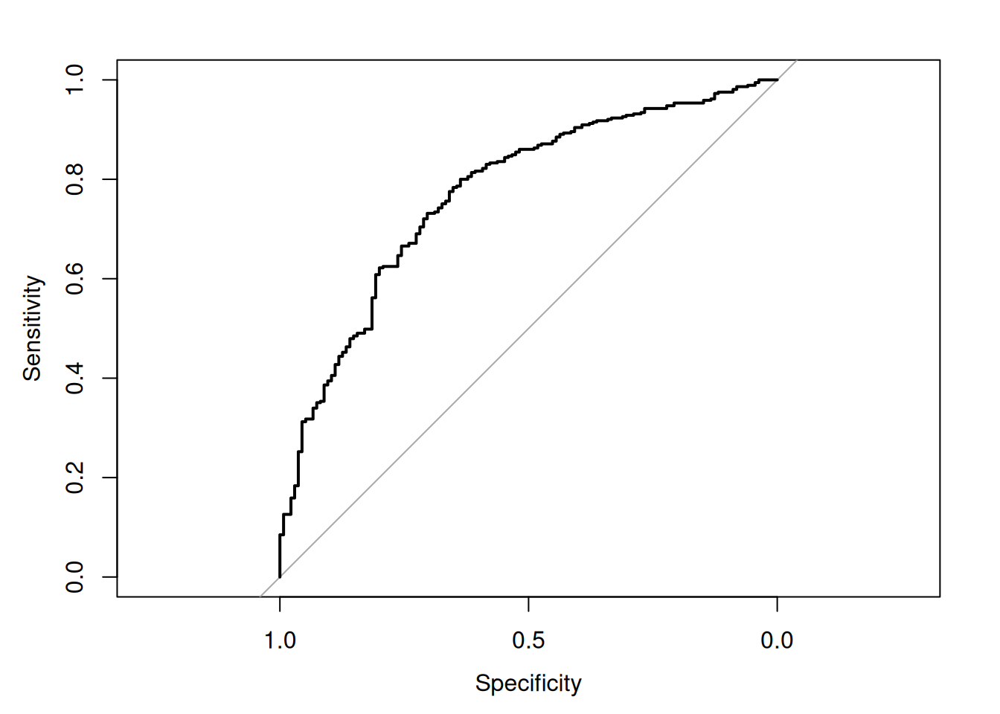
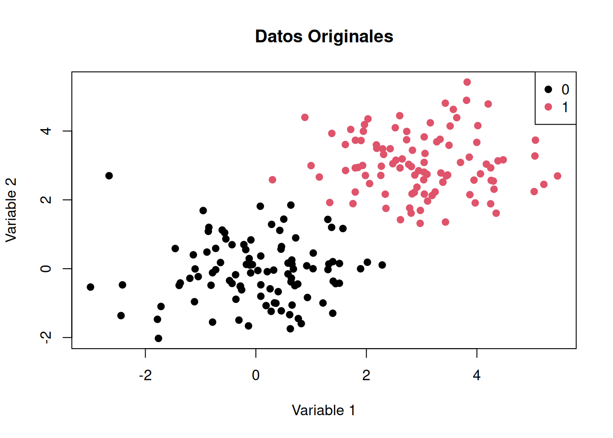
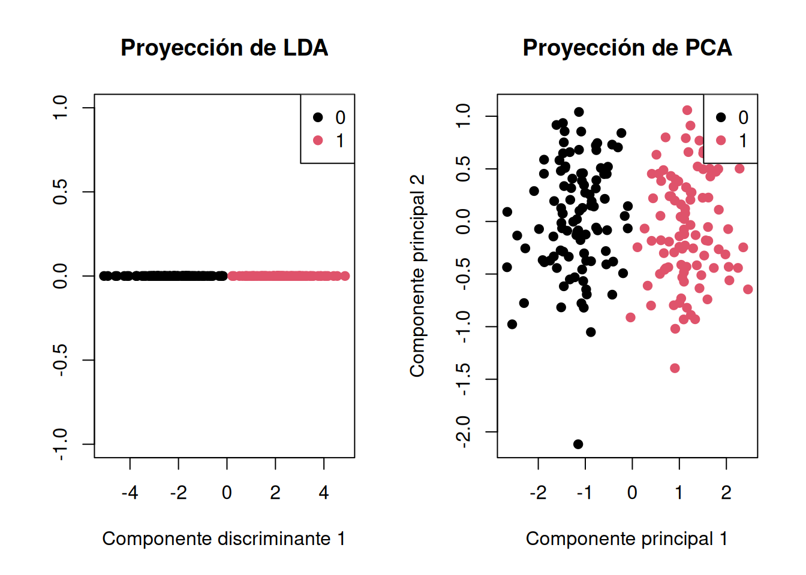
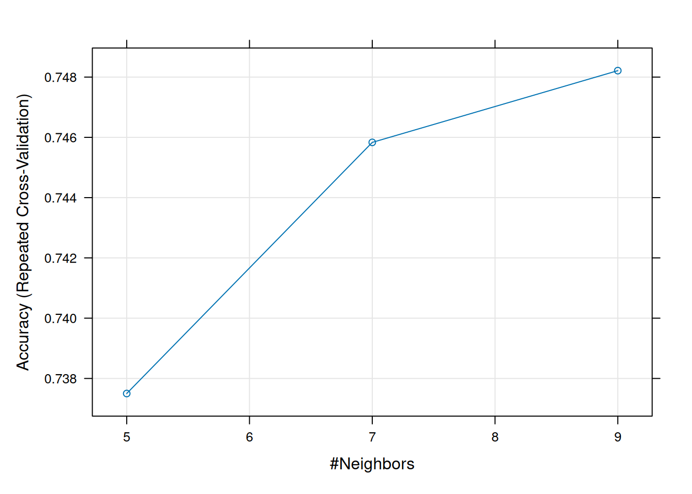
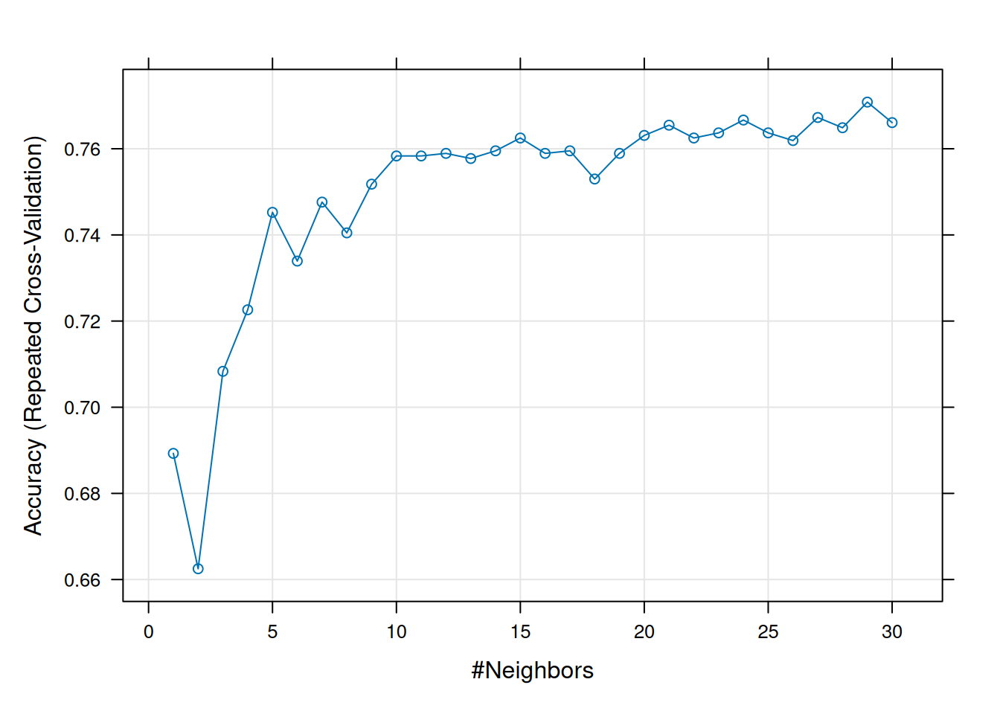
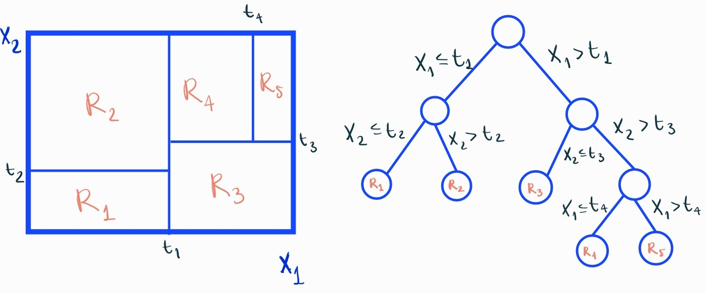
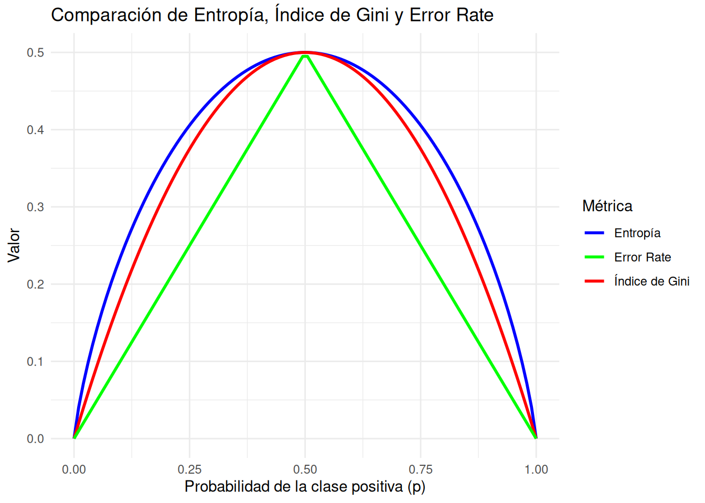
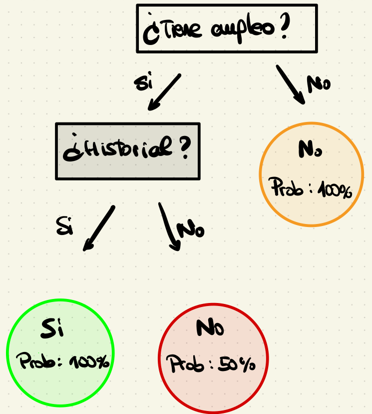

set.seed(123)
n <- 500
tiros <- data.frame(
distancia = runif(n, 5, 35),
angulo = runif(n, 5, 80)
)
eta <- 1.5 - 0.08*tiros$distancia + 0.03*tiros$angulo
p <- 1/(1+exp(-eta))
tiros$gol <- rbinom(n,1,p)8 Aprendizaje supervisado
El aprendizaje automático supervisado constituye una de las herramientas más importantes dentro de la analítica deportiva moderna. En este enfoque, trabajamos con conjuntos de datos históricos en los que conocemos la variable objetivo que deseamos predecir o explicar. Esta variable objetivo puede representar distintos fenómenos relevantes en el deporte, como el resultado de un partido, la probabilidad de gol de un disparo, el rendimiento de un jugador o el riesgo de lesión. El resto de variables del conjunto de datos —como estadísticas de juego, métricas físicas o información contextual— actúan como variables predictoras, a partir de las cuales los modelos aprenden patrones que permiten realizar predicciones sobre nuevos casos.
El objetivo principal del aprendizaje automático supervisado en el contexto deportivo es identificar relaciones entre variables que permitan anticipar eventos relevantes o comprender mejor el rendimiento. Para ello, los algoritmos se entrenan con datos históricos y aprenden a reconocer patrones que posteriormente pueden aplicarse a situaciones futuras, como partidos aún no disputados o acciones que ocurren durante el juego.
Uno de los usos más habituales del aprendizaje supervisado en analítica deportiva es la clasificación, donde el objetivo es asignar observaciones a diferentes categorías. Por ejemplo, podemos utilizar modelos de clasificación para predecir si un disparo terminará en gol o no gol, si un equipo ganará o perderá un partido, si un jugador presenta alto o bajo riesgo de lesión, o si una acción de juego puede clasificarse como ocasión clara de gol o como oportunidad de bajo peligro.
Además de los problemas de clasificación, el aprendizaje supervisado también se utiliza para abordar problemas de regresión, en los que la variable objetivo es una cantidad numérica continua. En el ámbito deportivo, estos modelos permiten estimar magnitudes como el número esperado de goles de un equipo en un partido, la distancia recorrida por un jugador durante el encuentro, el valor esperado de una acción ofensiva, o el rendimiento futuro de un jugador a partir de sus métricas actuales.
A lo largo de este tema exploraremos diversos algoritmos de aprendizaje supervisado aplicados al análisis de datos deportivos. Aprenderemos cómo entrenar modelos utilizando datos históricos, cómo evaluar su rendimiento mediante métricas adecuadas y cómo interpretar sus resultados en contextos reales de análisis del rendimiento y toma de decisiones. En el ecosistema actual del deporte profesional, donde los clubes generan y almacenan grandes volúmenes de datos, el aprendizaje automático supervisado se ha convertido en una herramienta esencial para transformar datos en conocimiento accionable.
8.0.1 Regresión logística como modelo base en clasificación
En el tema anterior estudiamos con detalle los Modelos Lineales Generalizados (GLM) y vimos cómo permiten modelar distintos tipos de variables respuesta mediante funciones de enlace y distribuciones adecuadas. En este tema no volveremos a desarrollar su teoría, sino que utilizaremos uno de los casos más importantes -la regresión logística- como modelo de referencia en problemas de clasificación supervisada.
En aprendizaje automático, la regresión logística se utiliza con frecuencia como modelo base (baseline model), es decir, un modelo sencillo, interpretable y relativamente robusto frente al cual se comparan algoritmos más complejos como árboles de decisión, random forests o gradient boosting. A pesar de su simplicidad, la regresión logística sigue siendo una herramienta muy potente y ampliamente utilizada en analítica deportiva.
Recordemos brevemente su estructura. Si \(y\) es una variable respuesta binaria (por ejemplo, lesión/no lesión), el modelo logístico establece que
\[ \log\left(\frac{\mu(x)}{1-\mu(x)}\right) = \beta_0 + \beta_1 x_1 + \ldots + \beta_p x_p \]
donde \(\mu(x)=P(y=1|x)\) representa la probabilidad condicionada del evento de interés.
Equivalentemente, la probabilidad puede expresarse como
\[ \mu(x)=\frac{1}{1+\exp(-(\beta_0+\beta_1x_1+\ldots+\beta_px_p))} \]
Los parámetros del modelo se estiman mediante máxima verosimilitud, y los coeficientes pueden interpretarse mediante la exponencial de los mismos, que corresponde a una razón de ventajas (odds ratio).
En analítica deportiva, la regresión logística se utiliza en numerosos problemas de clasificación, por ejemplo:
- predecir si un disparo terminará en gol (modelos tipo expected goals),
- estimar la probabilidad de victoria de un equipo,
- clasificar jugadores según riesgo de lesión,
- identificar acciones ofensivas de alto peligro.
Ejemplo: probabilidad de gol
Como ejemplo sencillo, supongamos que queremos modelar la probabilidad de que un disparo termine en gol utilizando información como la distancia al arco y el ángulo de tiro.
Ajustamos un modelo logístico:
library(caret)Loading required package: ggplot2Loading required package: latticemodelo_logit <- glm(gol ~ distancia + angulo,
data = tiros,
family = binomial)
summary(modelo_logit)
Call:
glm(formula = gol ~ distancia + angulo, family = binomial, data = tiros)
Coefficients:
Estimate Std. Error z value Pr(>|z|)
(Intercept) 1.385602 0.344604 4.021 5.80e-05 ***
distancia -0.089414 0.013943 -6.413 1.43e-10 ***
angulo 0.038481 0.005555 6.928 4.28e-12 ***
---
Signif. codes: 0 '***' 0.001 '**' 0.01 '*' 0.05 '.' 0.1 ' ' 1
(Dispersion parameter for binomial family taken to be 1)
Null deviance: 583.26 on 499 degrees of freedom
Residual deviance: 489.39 on 497 degrees of freedom
AIC: 495.39
Number of Fisher Scoring iterations: 4Estudiamos en el capítulo anterior cómo la interpretación suele realizarse mediante odds ratios:
exp(coef(modelo_logit))(Intercept) distancia angulo
3.9972310 0.9144669 1.0392306 8.0.1.1 Predicción y clasificación
predicciones <- predict(modelo_logit, type="response")
head(predicciones) 1 2 3 4 5 6
0.7989997 0.5184756 0.7031766 0.2675902 0.4165199 0.8209047 clase.pred <- ifelse(predicciones > 0.5, 1, 0)Evaluación del modelo
library(caret)
confusionMatrix(as.factor(clase.pred),
as.factor(tiros$gol))Confusion Matrix and Statistics
Reference
Prediction 0 1
0 44 28
1 91 337
Accuracy : 0.762
95% CI : (0.7222, 0.7987)
No Information Rate : 0.73
P-Value [Acc > NIR] : 0.05782
Kappa : 0.2922
Mcnemar's Test P-Value : 1.319e-08
Sensitivity : 0.3259
Specificity : 0.9233
Pos Pred Value : 0.6111
Neg Pred Value : 0.7874
Prevalence : 0.2700
Detection Rate : 0.0880
Detection Prevalence : 0.1440
Balanced Accuracy : 0.6246
'Positive' Class : 0
También podemos evaluar el modelo mediante la curva ROC:
library(pROC)Type 'citation("pROC")' for a citation.
Attaching package: 'pROC'The following objects are masked from 'package:stats':
cov, smooth, varroc_obj <- roc(tiros$gol, predicciones)Setting levels: control = 0, case = 1Setting direction: controls < casesplot(roc_obj)
auc(roc_obj)Area under the curve: 0.77068.0.1.2 Regresión logística en Machine Learning
Aunque en analítica deportiva se utilizan modelos más complejos, la regresión logística sigue siendo un modelo fundamental porque:
- es fácil de interpretar
- es rápida de entrenar
- funciona bien con conjuntos de datos moderados
- sirve como modelo base de referencia
8.0.2 Análisis Discriminante Lineal
El análisis discriminante lineal (Linear Discriminant Analysis, LDA) (Hastie et al. 2009), (Murphy 2012) es una técnica estadística de clasificación supervisada utilizada para encontrar una combinación lineal de variables que discrimine dos o más grupos. Se basa en la idea de modelar la distribución de cada clase y aplicar el criterio de Bayes para asignar nuevas observacones a una de ellas.Se trata de un algoritmo de clasificación, es decir, la variable objetivo \(Y\) es categórica: \(Y \in \{1,\dots,C\}\).
Supongamos que los datos de cada clase \(Y=c\) siguen una distribución Normal multivariante:
\[ f_c(\mathbf{x})=P(\mathbf{x}|Y=c) = \frac{1}{(2\pi)^{p/2}|\Sigma_c|^{1/2}}e^{-\frac{1}{2}(\mathbf{x}-\mu_c)^{t}\Sigma_c^{-1}(\mathbf{x}-\mu_c)} \]
donde:
\(\mathbf{x} \in \mathbb{R}^{p}\) es una observación
\(\mu_c\) es la media de la clase \(c\)
\(\Sigma_c\) es la matriz de covarianzas de la clase \(c\)
LDA surge cuando asumimos que las clases tienen una matriz de covarianzas común, es decir, \(\Sigma_c=\Sigma\), \(\forall c\).
El LDA se basa en el Teorema de Bayes. Bajo este teorema, asignaremos una observación \(\mathbf{x}\) a la clase que maximiza la probabilidad a posteriori \(P(Y=c|\mathbf{x})\) que, por el teorema de Bayes es
\[ P(Y=c|\mathbf{X}=\mathbf{x})=\frac{P(\mathbf{X}=\mathbf{x}| Y =c)P(Y=c)}{P(\mathbf{x})}\]
Así, si queremos comparar 2 clases, la \(0\) y la \(1\), bastará con analizar el siguiente log-ratio: \[log\left( \frac{P(Y=1|\mathbf{X}=\mathbf{x})}{P(Y=0|\mathbf{X}=\mathbf{x})} \right) = log\left( \frac{P(Y=1|\mathbf{x})}{P(Y=0|\mathbf{x})} \right) + log\left( \frac{P(Y=1)}{P(Y=0)} \right) =\]
\[ = log\left( \frac{P(1)}{P(0)} \right) - \frac{1}{2}(\mu_1 + \mu_0)^{t}\Sigma^{-1}(\mu_1-\mu_0) + \mathbf{x}^{t}\Sigma^{-1}(\mu_1-\mu_0) \]
Obtenemos una ecuación que es lineal en \(\mathbf{x}\). Puede verse más fácilmente llamando: \(\mathbf{w}=\Sigma^{-1}(\mu_1-\mu_0)\) y \(w_0 = log\left( \frac{P(1)}{P(0)} \right) - \frac{1}{2}(\mu_1 + \mu_0)^{t}\Sigma^{-1}(\mu_1-\mu_0)\).
Esta ecuación define la frontera de decisión lineal donde la probabilidad de las clases es igual cuando \(\mathbf{x}^{t}\mathbf{w}+w_0 =0\). La frontera de decisión entre las clases \(0\) y \(1\) es una ecuación lineal, un hiperplano en dimensión \(p\).
¿Cómo se lleva entonces a cabo la clasificación? Como la frontera es un hiperplano separador, se comparará a qué población está más cercana cada observación. Esto es, para clasificar una observación como perteneciente a la clase \(1\), tendrá que ocurrir que
\[ log\left( \frac{P(Y=1|\mathbf{X}=\mathbf{x})}{P(Y=0|\mathbf{X}=\mathbf{x})} \right) >0\]
y esto es equivalente a
\[ \mathbf{x}^{t} \widehat{\Sigma}^{-1}(\widehat{\mu}_1 - \widehat{\mu}_0) > \frac{1}{2}(\widehat{\mu}_1 + \widehat{\mu}_0)^{t}\widehat{\Sigma}^{-1}(\widehat{\mu}_1 - \widehat{\mu}_0) - log(n_1/n_0) \]
Con esto, de forma general, vemos que las funciones discriminantes lineales son \[\delta_{c}(\mathbf{x})=\mathbf{x}^{t} \Sigma^{-1}\mu_{c} -\frac{1}{2}\mu_{c}^{t}\Sigma^{-1}\mu_{c} + \log(P(Y=c))\]
Esta es la función que se maximiza para asignar la observación \(\mathbf{x}\) a la clase de mayor probabilidad. Esto es, la regla de decisión es \(argmax_{c} \delta_{c}(\mathbf{x})\), que significa que se asignará \(\mathbf{x}\) a la clase \(c\) que tenga el mayor valor de \(\delta_{c}(\mathbf{x})\). La ecuación de la frontera de decisión vista antes es justamente la que se obtiene cuando \(\delta_{0}(\mathbf{x}) =\delta_{1}(\mathbf{x})\).
En la práctica, se desconocen los parámetros de la distribución Normal. Se estiman con los datos de entrenamiento:
\(\widehat{P(c)} = n_c/n\), siendo \(n_c\) el tamaño de la clase \(c\) y \(n\) el total
\(\widehat{\mu}_c\) media muestral de los elementos de la clase \(c\)
\(\widehat{\Sigma}=\frac{1}{n-C}\sum_{c=1}^{C}\sum_{y_i = c}(\mathbf{x}_i - \widehat{\mu}_c)(\mathbf{x}_i - \widehat{\mu}_c)^{t}\). Se utilizan los datos de todas las clases para calcular la matriz de covarianzas: suma de las matrices de covarianza de cada clase, ponderadas según su tamaño muestral (MLE). Se resta el número total clases \(C\) porque es el número de medias \(\widehat{\mu}_c\) estimado.
Visión geométrica del LDA
9 Visión geométrica
El Análisis Discriminante Lineal (LDA) sigue una filosofía similar al Análisis de Componentes Principales (PCA), pero con un objetivo distinto: en lugar de buscar la máxima variabilidad de los datos sin considerar etiquetas, LDA se centra en maximizar la separabilidad entre clases. Es decir, busca encontrar una proyección de los datos en una nueva dimensión en la que las clases queden lo más separadas posible.
Una forma intuitiva de ver el LDA es como una proyección geométrica de los datos en una recta, donde la asignación de clase se realiza según la proximidad a las medias proyectadas de cada clase. Matemáticamente, se busca un vector de proyección \(\mathbf{w}\) tal que los datos proyectados \(\mathbf{z}=\mathbf{w}^t\mathbf{x}\) de distintas clases queden lo más separados posibles. \(\mathbf{z}_i\) representa la coordenada del punto \(\mathbf{x}_i\) en la nueva dimensión reducida. ¿Te recuerda a PCA? En efecto, en ambos casos se realiza una transformación lineal de los datos. Sin embargo, mientras que en PCA se maximizan las varianzas de los datos proyectados, en LDA se maximiza la separación entre clases y se minimiza la dispersión dentro de cada clase.
Para encontrar el nuevo eje de proyección, LDA busca maximizar la distancia entre las medias de las clases y minimizar la dispersión dentro de cada una de ellas. En el caso binario, definimos las medias de cada clase como: \[\mu_{0} = \frac{1}{n_{0}} \sum_{i:Y_{i}=0} \mathbf{x}_i\] y \[\mu_{1} = \frac{1}{n_{1}} \sum_{i:Y_{i}=1} \mathbf{x}_i\] denotando \(i:Y_{i}=0\) aquellas observaciones \(i\) que son de la clase \(0\), es decir, \(Y_i=0\) y siendo \(n_0\) y \(n_1\) los tamaños de las clases \(0\) y \(1\), respectivamente.
Si proyectamos estas medias sobre el nuevo eje definido por \(\mathbf{w}\), obtenemos \(m_c = \mathbf{w}^{t}\mu_{c}\).
Para evaluar la dispersión de los datos en la nueva dimensión, definimos la varianza de los puntos proyectados en cada clase como: \[S_{c}^{2}=\sum_{i:Y_i=c}(z_i-m_c)^{2}.\]
Dado que queremos que las medias proyectadas estén lo más separadas posible y que la dispersión dentro de cada clase sea mínima, definimos la función objetivo como: \[J(\mathbf{w})=\frac{(m_1-m_0)^{2}}{S_{0}^{2} + S_{1}^{2}}.\] Esta expresión se puede reformular en términos matriciales: \[J(\mathbf{w})=\frac{\mathbf{w}^{t}S_{B}\mathbf{w}}{\mathbf{w}^{t}S_{W}\mathbf{w} },\] donde:
\(S_{B}=(\mu_1 - \mu_0)(\mu_1 - \mu_0)^{t}\) es la matriz de dispersión entre las clases (between-class scatter)
y \(S_{W}=\sum_{i:Y_i=0}(\mathbf{x}_i - \mu_0)(\mathbf{x}_i - \mu_0)^{t} + \sum_{i:Y_i=1}(\mathbf{x}_i - \mu_1)(\mathbf{x}_i - \mu_1)^{t}\) es la matriz de dispersión dentro de cada clase (within-class).
Esto es así puesto que \[\mathbf{w}^{t}S_{B}\mathbf{w} = \mathbf{w}^{t}(\mu_1 - \mu_0)(\mu_1 - \mu_0)^{t}\mathbf{w}=(m_1 - m_0)^{2}\] y, por otro lado, \[\mathbf{w}^{t}S_{W}\mathbf{w} = \sum_{i:Y_i = 0}\mathbf{w}^{t}(\mathbf{x}_i - \mu_0)(\mathbf{x}_i - \mu_0)^{t}\mathbf{w} + \sum_{i:Y_i = 1}\mathbf{w}^{t}(\mathbf{x}_i - \mu_1)(\mathbf{x}_i - \mu_1)^{t}\mathbf{w}=\] \[=\sum_{i:Y_i = 0} (\mathbf{z}_i-m_0)^{2}+\sum_{i:Y_i = 1} (\mathbf{z}_i-m_1)^{2}\]
Para maximizar \(J(\mathbf{w})\), derivamos con respecto \(\mathbf{w}\) y llegamos a la ecuación característica \(S_{B}\mathbf{w}=\lambda S_{W}\mathbf{w}\). Si \(S_{W}\) es invertible, \(S_{W}^{-1}S_{B}\mathbf{w}=\lambda \mathbf{w}\). Esto recuerda al problema de autovalores y autovectores de PCA. Sin embargo, en este caso, como \(S_{B}\mathbf{w}=(\mu_1 - \mu_0)(\mu_1 - \mu_0)^{t}\mathbf{w}=(\mu_1 - \mu_0)(m_1 - m_0)\). Podemos sustituir en la ecuación característica y llegamos a que \[\lambda \mathbf{w}=S_{W}^{-1}(\mu_1 - \mu_0)(m_1 - m_0).\] Es decir, \[\mathbf{w} \propto S_{W}^{-1}(\mu_1 - \mu_0).\] En este punto, como el objetivo es encontrar la dirección de la proyección, tomamos \(\mathbf{w}=S_{W}^{-1}(\mu_1 - \mu_0)\), que es lo que obtuvimos antes.
Veamos ahora un ejemplo para compara LDA y PCA.
# Librerías
library(MASS)
# Semilla para reproducibilidad
set.seed(42)
# Conjunto de datos artificial
n <- 100 # número de observaciones por clase
p <- 2 # número de variables
class_0 <- matrix(rnorm(n * p, mean = 0), ncol = p)
class_1 <- matrix(rnorm(n * p, mean = 3), ncol = p)
data <- rbind(class_0, class_1)
labels <- factor(c(rep(0, n), rep(1, n)))
df <- data.frame(x1 = data[, 1], x2 = data[, 2], class = labels)
# Visualización de los datos originales
plot(df$x1, df$x2, col = df$class, pch = 19, xlab = "Variable 1", ylab = "Variable 2", main = "Datos Originales")
legend("topright", legend = levels(df$class), col = 1:length(levels(df$class)), pch = 19)
# LDA
lda_model <- lda(class ~ x1 + x2, data = df)
# Puntuaciones proyectadas en el espacio discriminante de LDA
lda_predictions <- predict(lda_model)
# PCA
pca_model <- prcomp(df[, -3], center = TRUE, scale. = TRUE)
# Puntuaciones proyectadas en el espacio de PCA
pca_predictions <- pca_model$x
# Graficar LDA y PCA
par(mfrow = c(1, 2))
# Gráfico de LDA
plot(lda_predictions$x[, 1], rep(0, length(lda_predictions$x[, 1])), col = df$class,
xlab = "Componente discriminante 1", ylab = "",
main = "Proyección de LDA", pch = 19)
legend("topright", legend = levels(df$class), col = 1:length(levels(df$class)), pch = 19)
# Gráfico de PCA
plot(pca_predictions[, 1], pca_predictions[, 2], col = df$class,
xlab = "Componente principal 1", ylab = "Componente principal 2",
main = "Proyección de PCA", pch = 19)
legend("topright", legend = levels(df$class), col = 1:length(levels(df$class)), pch = 19)
par(mfrow = c(1, 1))
Ventajas
Simple y rápido
Eficiente cuando se cumple las hipótesis
Clasificación de observaciones en grupos determinados. LDA se utiliza comúnmente para clasificar observaciones en grupos predeterminados, lo que facilita la interpretación y la toma de decisiones.
Combinación de información para la frontera de decisión. Al considerar la información combinada de varias variables, LDA puede capturar patrones que podrían no ser evidentes al analizar cada variable por separado
Desventajas
Asume normalidad y homocedasticidad. LDA puede ser sensible a la falta de normalidad en las variables y a la diferente variabilidad en las mismas.
Sensible a outliers. LDA puede ser sensible a la presencia de valores atípicos en los datos, lo que puede afectar negativamente la calidad del modelo.
Es un clasificador lineal.Como su nombre indica, LDA es lineal y puede no funcionar bien en situaciones donde la relación entre las variables predictoras y la variable dependiente es no lineal.
Requiere cierto tamaño de muestra. Para obtener resultados confiables, LDA requiere un tamaño de muestra adecuado en cada grupo, y puede no funcionar bien con tamaños de muestra desequilibrados
9.1 k-Vecinos
El método de los \(k\) vecinos más cercanos (\(k-NN\)), abreviatura de “k nearest neighbors” en inglés, se cuenta entre los enfoques más simples y ampliamente utilizados en el campo del ML. Este método se basa en la noción de similitud (o distancia) entre observaciones.
Para recordar
La principal asunción del modelo de los \(k\) vecinos más cercanos es la existencia de un espacio de características en el cual observaciones similares se encuentran en proximidad.
A pesar de su simplicidad aparente, esta suposición plantea desafíos importantes. En primer lugar podemos plantearnos la elección adecuada del espacio de características, es decir, en la correcta selección de la métrica que definirá la similitud. No existe una fórmula mágica para determinar, a partir de un conjunto de datos dado, cuál es la métrica óptima a utilizar.
El segundo desafío se relaciona con la noción de “cercanía”. ¿Cómo definimos la cercanía entre dos observaciones? ¿Cuál es el volumen máximo del espacio dentro del cual consideramos que dos observaciones están cerca, y más allá del cual las consideramos distantes?
A pesar de estas cuestiones aparentemente simples, el método de los \(k\) vecinos más cercanos se ha demostrado efectivo en una amplia variedad de aplicaciones, tanto en clasificación como en regresión. En este apartado, exploraremos cómo funciona este algoritmo, cómo ajustar sus parámetros y cómo aplicarlo de manera efectiva en situaciones del mundo real. A pesar de su simplicidad conceptual, los \(k\) vecinos más cercanos siguen siendo una herramienta valiosa en el repertorio de ML.
El algoritmo de los \(k\) vecinos más cercanos es un sencillo método de clasificación y regresión. En primer lugar, se eligen los parámetros del modelo:
la métrica,
el número de vecinos, \(k\).
En los ejemplos siguientes, se podrá observar que es habitual realizar pruebas con diferentes configuraciones de parámetros para identificar cuáles son los más apropiados. El principio fundamental del algoritmo implica obtener los \(k\) vecinos más cercanos para cada observación en la muestra de datos. En un problema de clasificación, el algoritmo devolverá la clase que predomina entre los \(k\) vecinos, es decir, la moda de la variable objetivo. En cambio, en un problema de regresión, el algoritmo proporcionará la media de la variable respuesta de los \(k\) vecinos más cercanos.
Para determinar el valor óptimo de \(k\) en función de los datos, ejecutamos el algoritmo \(k-NN\) múltiples veces, utilizando distintos valores de \(k\), y seleccionamos aquel valor que minimice la tasa de errores, al mismo tiempo que preserva la capacidad del algoritmo para realizar predicciones precisas en datos no vistos previamente. Es importante destacar que valores muy bajos de \(k\) pueden generar inestabilidad en el algoritmo, mientras que valores extremadamente altos de \(k\) pueden aumentar el error en las predicciones. En este proceso, se busca el equilibrio adecuado que optimice el rendimiento del algoritmo en cada situación.
Ventajas
Sencillez y facilidad de implementación: Es uno de los algoritmos más sencillos y fáciles de entender en ML. No requiere suposiciones complejas o entrenamientos prolongados.
Versatilidad: Se puede aplicar tanto a problemas de clasificación como de regresión.
No paramétrico: A diferencia de algunos algoritmos que asumen una distribución específica de los datos, \(k-NN\) no hace suposiciones sobre la forma de los datos, lo que lo hace adecuado para una amplia gama de situaciones.
Adaptabilidad a datos cambiantes: Puede adaptarse a cambios en los datos sin necesidad de volver a entrenar el modelo por completo, lo que lo hace útil en escenarios de datos en constante evolución. Ver ?sec-nuevas.
Interpretabilidad: Las predicciones de k-NN se basan en la observación de datos cercanos, lo que facilita la interpretación de las decisiones del modelo.
Robustez frente al ruido: Puede manejar datos con ruido, que no se adaptan a la distribución de la mayoría de los datos, sin un gran impacto en su rendimiento.
Facilidad para multiclases: Es aplicable a problemas de clasificación con múltiples clases sin necesidad de modificaciones significativas.
Desventajas
Sensibilidad a la elección de \(k\): La elección del parámetro que determina el número de vecinos puede ser crítica. Un valor demasiado pequeño puede hacer que el modelo sea sensible al ruido en los datos y cause sobreajuste, mientras que un valor demasiado grande puede hacer que el modelo sea demasiado suave y cause subajuste.
Sensibilidad a la elección de la métrica de distancia: La elección de la métrica de distancia es crucial y puede tener un impacto significativo en el rendimiento del algoritmo. No existe una métrica única que funcione para todos los problemas, y la elección de la métrica adecuada puede ser un desafío. Es muy probable que el científico de datos deba programar la métrica más adecuada para cada caso particular.
Coste computacional: En conjuntos de datos grandes, calcular las distancias entre una nueva observación y todos los puntos de datos en el conjunto de entrenamiento puede ser computacionalmente costoso y lento. Esto limita su eficiencia en aplicaciones con grandes volúmenes de datos.
Incapacidad para capturar relaciones complejas: \(k-NN\) es un algoritmo simple que no puede capturar relaciones complejas entre las características, como lo harían modelos más avanzados. No es adecuado para problemas con patrones no lineales.
Problemas en datos desbalanceados: En problemas de clasificación con clases desequilibradas, donde una clase tiene muchas más muestras que otra, \(k-NN\) tiende a sesgarse hacia la clase mayoritaria y puede no detectar bien la clase minoritaria.
Aplicamos ahora el algoritmo a un problema de analítica deportiva. Utilizaremos un conjunto de datos simulados en el que queremos predecir si un disparo termina en gol o no a partir de varias características de la acción.
Las variables predictoras que utilizaremos serán:
distancia: distancia del disparo a portería,angulo: ángulo de tiro,velocidad: velocidad del disparo,contraataque: indica si la acción se produjo en transición rápida (si/no).
La variable respuesta será:
gol: indica si el disparo terminó en gol (si) o no (no).
library(dplyr)
Attaching package: 'dplyr'The following object is masked from 'package:MASS':
selectThe following objects are masked from 'package:stats':
filter, lagThe following objects are masked from 'package:base':
intersect, setdiff, setequal, unionlibrary(tidyverse)── Attaching core tidyverse packages ──────────────────────── tidyverse 2.0.0 ──
✔ forcats 1.0.0 ✔ stringr 1.5.1
✔ lubridate 1.9.4 ✔ tibble 3.2.1
✔ purrr 1.0.4 ✔ tidyr 1.3.1
✔ readr 2.1.5 ── Conflicts ────────────────────────────────────────── tidyverse_conflicts() ──
✖ dplyr::filter() masks stats::filter()
✖ dplyr::lag() masks stats::lag()
✖ purrr::lift() masks caret::lift()
✖ dplyr::select() masks MASS::select()
ℹ Use the conflicted package (<http://conflicted.r-lib.org/>) to force all conflicts to become errorslibrary(caret)
# -----------------------------
# Simulación de datos deportivos
# -----------------------------
set.seed(123)
n <- 800
tiros <- data.frame(
distancia = runif(n, 5, 35),
angulo = runif(n, 5, 80),
velocidad = runif(n, 50, 120),
contraataque = factor(rbinom(n, 1, 0.3), labels = c("no", "si"))
)
# Probabilidad simulada de gol
eta <- 1.2 -
0.09 * tiros$distancia +
0.025 * tiros$angulo +
0.012 * tiros$velocidad +
0.6 * (tiros$contraataque == "si")
p <- 1 / (1 + exp(-eta))
tiros$gol <- factor(rbinom(n, 1, p), labels = c("no", "si"))
# -----------------------------
# Partición train / test
# -----------------------------
set.seed(128)
idx_train <- sample(seq_len(nrow(tiros)), size = 0.7 * nrow(tiros))
tiros.train <- tiros[idx_train, ]
tiros.test <- tiros[-idx_train, ]Usamos validación cruzada repetida de 10 bloques para seleccionar el mejor valor de \(k\) y estimar el rendimiento medio del modelo.
# Usamos 10-fold cross validation
trainControl <- trainControl(method = "repeatedcv", number = 10, repeats = 3)
metric <- "Accuracy"
set.seed(128)
df <- tiros.train %>%
dplyr::select(distancia, angulo, velocidad, contraataque, gol)
# Escalamos solo las variables numéricas
df[, c("distancia", "angulo", "velocidad")] <- scale(df[, c("distancia", "angulo", "velocidad")])
fit.knn <- train(
gol ~ .,
data = df,
method = "knn",
metric = metric,
trControl = trainControl
)
knn.k1 <- fit.knn$bestTune
print(fit.knn)k-Nearest Neighbors
560 samples
4 predictor
2 classes: 'no', 'si'
No pre-processing
Resampling: Cross-Validated (10 fold, repeated 3 times)
Summary of sample sizes: 504, 504, 504, 504, 504, 504, ...
Resampling results across tuning parameters:
k Accuracy Kappa
5 0.7375000 0.1019806
7 0.7458333 0.1056315
9 0.7482143 0.1021652
Accuracy was used to select the optimal model using the largest value.
The final value used for the model was k = 9.plot(fit.knn)
Según el gráfico anterior, podemos elegir el mejor valor de \(k\), aunque en ocasiones las diferencias entre varios valores cercanos pueden ser pequeñas.
A continuación, obtenemos la predicción para el conjunto de datos de prueba e imprimimos la matriz de confusión. Para ello, debemos escalar las variables numéricas del conjunto de prueba utilizando la media y desviación típica del conjunto de entrenamiento, de modo que el preprocesado sea coherente.
set.seed(128)
media_dist <- mean(tiros.train$distancia)
sd_dist <- sd(tiros.train$distancia)
media_ang <- mean(tiros.train$angulo)
sd_ang <- sd(tiros.train$angulo)
media_vel <- mean(tiros.train$velocidad)
sd_vel <- sd(tiros.train$velocidad)
df.test <- tiros.test %>%
mutate(
distancia = (distancia - media_dist) / sd_dist,
angulo = (angulo - media_ang) / sd_ang,
velocidad = (velocidad - media_vel) / sd_vel
)
prediction <- predict(fit.knn, newdata = df.test)
cf <- confusionMatrix(
prediction,
as.factor(df.test$gol),
positive = "si"
)
print(cf)Confusion Matrix and Statistics
Reference
Prediction no si
no 4 11
si 39 186
Accuracy : 0.7917
95% CI : (0.7347, 0.8412)
No Information Rate : 0.8208
P-Value [Acc > NIR] : 0.8949153
Kappa : 0.0499
Mcnemar's Test P-Value : 0.0001343
Sensitivity : 0.94416
Specificity : 0.09302
Pos Pred Value : 0.82667
Neg Pred Value : 0.26667
Prevalence : 0.82083
Detection Rate : 0.77500
Detection Prevalence : 0.93750
Balanced Accuracy : 0.51859
'Positive' Class : si
En este contexto, la matriz de confusión permite evaluar hasta qué punto el algoritmo k-NN clasifica correctamente los disparos como gol o no gol. Esta evaluación resulta especialmente útil cuando se compara el rendimiento de este modelo con otros métodos de clasificación supervisada más habituales en analítica deportiva, como la regresión logística, los árboles de decisión o los métodos ensemble.
9.2 Grid search
La grid search (búsqueda en cuadrícula) es una técnica muy utilizada en machine learning para encontrar los mejores hiperparámetros de un modelo. Recordemos que los hiperparámetros son configuraciones que no se aprenden directamente de los datos, sino que deben fijarse antes del entrenamiento. En el caso del algoritmo k-Nearest Neighbours (k-NN), uno de los hiperparámetros más importantes es precisamente el número de vecinos, \(k\).
En analítica deportiva, esta técnica resulta especialmente útil cuando queremos optimizar modelos predictivos aplicados a problemas como:
- predecir si un disparo terminará en gol o no,
- clasificar jugadores según riesgo de lesión,
- anticipar la victoria o derrota de un equipo,
- identificar acciones de juego de alto peligro.
La idea de la grid search es sencilla: se define una cuadrícula de valores posibles para uno o varios hiperparámetros y se evalúan sistemáticamente todas las combinaciones. Después, se selecciona la configuración que proporciona el mejor rendimiento según una métrica elegida, como accuracy, precision, recall, F1-score o AUC.
Para recordar
La búsqueda en cuadrícula es un procedimiento sistemático y automatizado para seleccionar hiperparámetros, evitando probar combinaciones manualmente de forma desordenada.
Si, por ejemplo, un modelo tiene dos hiperparámetros y para cada uno consideramos tres valores posibles, el procedimiento evaluaría un total de nueve combinaciones distintas. Aunque este proceso puede ser costoso cuando la cuadrícula es grande, constituye una estrategia clara, reproducible y muy útil desde el punto de vista docente.
Es importante señalar que existen otras alternativas para la selección de hiperparámetros, como la random search, la optimización bayesiana o métodos adaptativos más avanzados. Sin embargo, la grid search sigue siendo una opción muy habitual cuando el número de hiperparámetros es reducido y queremos controlar con claridad el proceso de búsqueda.
En nuestro ejemplo deportivo, utilizaremos un problema de clasificación donde queremos predecir si un disparo termina en gol o no a partir de varias características de la acción. Buscaremos el mejor valor de \(k\) entre 1 y 30.
library(dplyr)
library(tidyverse)
library(caret)
# -----------------------------
# Simulación de datos deportivos
# -----------------------------
set.seed(123)
n <- 800
tiros <- data.frame(
distancia = runif(n, 5, 35),
angulo = runif(n, 5, 80),
velocidad = runif(n, 50, 120),
contraataque = factor(rbinom(n, 1, 0.3), labels = c("no", "si"))
)
# Probabilidad simulada de gol
eta <- 1.2 -
0.09 * tiros$distancia +
0.025 * tiros$angulo +
0.012 * tiros$velocidad +
0.6 * (tiros$contraataque == "si")
p <- 1 / (1 + exp(-eta))
tiros$gol <- factor(rbinom(n, 1, p), labels = c("no", "si"))
# -----------------------------
# Partición train / test
# -----------------------------
set.seed(128)
idx_train <- sample(seq_len(nrow(tiros)), size = 0.7 * nrow(tiros))
tiros.train <- tiros[idx_train, ]
tiros.test <- tiros[-idx_train, ]
# -----------------------------
# Configuración del entrenamiento
# -----------------------------
trainControl <- trainControl(
method = "repeatedcv",
number = 10,
repeats = 3
)
metric <- "Accuracy"
df <- tiros.train %>%
dplyr::select(distancia, angulo, velocidad, contraataque, gol)
# Escalado de variables numéricas en entrenamiento
df[, c("distancia", "angulo", "velocidad")] <- scale(df[, c("distancia", "angulo", "velocidad")])A continuación, definimos la cuadrícula de búsqueda para el hiperparámetro \(k\) y ajustamos el modelo.
set.seed(1271)
grid <- expand.grid(.k = seq(1, 30, by = 1))
fit.knn <- train(
gol ~ .,
data = df,
method = "knn",
metric = metric,
tuneGrid = grid,
trControl = trainControl
)
knn.k2 <- fit.knn$bestTune
print(fit.knn)k-Nearest Neighbors
560 samples
4 predictor
2 classes: 'no', 'si'
No pre-processing
Resampling: Cross-Validated (10 fold, repeated 3 times)
Summary of sample sizes: 504, 504, 504, 504, 504, 504, ...
Resampling results across tuning parameters:
k Accuracy Kappa
1 0.6892857 0.08400813
2 0.6625000 0.05796517
3 0.7083333 0.09085810
4 0.7226190 0.12866156
5 0.7452381 0.13438300
6 0.7339286 0.10572661
7 0.7476190 0.11163948
8 0.7404762 0.08077574
9 0.7517857 0.10915755
10 0.7583333 0.11481144
11 0.7583333 0.11492794
12 0.7589286 0.11891326
13 0.7577381 0.09499132
14 0.7595238 0.10182854
15 0.7625000 0.10359929
16 0.7589286 0.09032160
17 0.7595238 0.08617088
18 0.7529762 0.07856529
19 0.7589286 0.08293151
20 0.7630952 0.10498550
21 0.7654762 0.10051192
22 0.7625000 0.09501459
23 0.7636905 0.09573532
24 0.7666667 0.10629165
25 0.7636905 0.09575512
26 0.7619048 0.08508787
27 0.7672619 0.10232482
28 0.7648810 0.09341850
29 0.7708333 0.11123670
30 0.7660714 0.09404766
Accuracy was used to select the optimal model using the largest value.
The final value used for the model was k = 29.plot(fit.knn)
El resultado indica cuál es el valor de \(k\) que maximiza la métrica de rendimiento elegida. En este contexto, ese valor representa el número óptimo de disparos “más parecidos” que deben considerarse para clasificar una nueva acción como gol o no gol.
Una vez seleccionado el mejor modelo, lo aplicamos al conjunto de prueba. Para ello, debemos escalar las variables numéricas del conjunto de prueba utilizando la media y la desviación típica calculadas en el conjunto de entrenamiento.
set.seed(128)
media_dist <- mean(tiros.train$distancia)
sd_dist <- sd(tiros.train$distancia)
media_ang <- mean(tiros.train$angulo)
sd_ang <- sd(tiros.train$angulo)
media_vel <- mean(tiros.train$velocidad)
sd_vel <- sd(tiros.train$velocidad)
df.test <- tiros.test %>%
mutate(
distancia = (distancia - media_dist) / sd_dist,
angulo = (angulo - media_ang) / sd_ang,
velocidad = (velocidad - media_vel) / sd_vel
)Ahora generamos las predicciones para el conjunto de prueba e imprimimos la matriz de confusión.
prediction.knn <- predict(fit.knn, newdata = df.test, type = "prob")[, 2]
clase.pred.knn <- ifelse(prediction.knn > 0.5, "si", "no")
cf <- confusionMatrix(
as.factor(clase.pred.knn),
as.factor(df.test$gol),
positive = "si"
)
print(cf)Confusion Matrix and Statistics
Reference
Prediction no si
no 5 3
si 38 194
Accuracy : 0.8292
95% CI : (0.7755, 0.8745)
No Information Rate : 0.8208
P-Value [Acc > NIR] : 0.4069
Kappa : 0.1482
Mcnemar's Test P-Value : 1.097e-07
Sensitivity : 0.9848
Specificity : 0.1163
Pos Pred Value : 0.8362
Neg Pred Value : 0.6250
Prevalence : 0.8208
Detection Rate : 0.8083
Detection Prevalence : 0.9667
Balanced Accuracy : 0.5505
'Positive' Class : si
En este ejemplo, la matriz de confusión nos permite evaluar hasta qué punto el modelo k-NN optimizado mediante grid search clasifica correctamente los disparos. Este tipo de análisis resulta especialmente útil cuando queremos comparar el rendimiento de distintas configuraciones del modelo o enfrentarlo a otros algoritmos de clasificación habituales en sports analytics, como la regresión logística, los árboles de decisión o los métodos ensemble.
Métricas de disimilaridad
Hasta ahora hemos empleado la distancia Euclídea, pero ¿es lo más adecuado en este caso? Averigua cómo modificar este hiperparámetro del modelo y estudia qué consecuencias tiene.
9.3 Árboles de decisión
Los Árboles de Decisión (DT, de Decision Tree en inglés) son algoritmos de ML basados en la información. Este tipo de algoritmos determinan qué variables explicativas proporcionan la mayor parte de la información (ganancia de información) para medir la variable objetivo y hacen predicciones probando secuencialmente las características en orden a su información (Kelleher y Tierney 2018).
Un DT se crea mediante un proceso de particionamiento recursivo del espacio de las variables explicativas y asignando una predicción en cada una de las regiones (hojas) resultantes. Es decir, va seleccionando variables y cortes en sus valores y con ello crea una rama del árbol con dos nodos hijos. Para una mejor comprensión de la estructura de un árbol, necesitamos definir los siguientes conceptos:
- Nodo raíz: es el nodo origen, inicialmente todas las observaciones forman parte de este nodo.
- Nodos internos: son los nodos que se crean al definir reglas sobre una variable explicativa.
- Nodos hojas: son los nodos terminales del árbol.
En la siguiente imagen se puede apreciar el funcionamiento de un árbol de decisión.

Una vez obtenidas las distintas regiones \(R_h\), el modelo sería \[f(\mathbf{x})=\sum_{h=1}^{H}g_{h}I(\mathbf{x}\in R_{h})\] siendo \(I(\mathbf{x}\in R_{h})\) la función indicatriz que vale \(1\) si la observación \(\mathbf{x}\) pertenece a la región \(R_{h}\) y \(g_{h}\) la predicción (el valor de la variable respuesta) que se le asignará a dicha observación. En un problema de regresión \(g_{h}\) será la media de la variable respuesta \(y\) en dicha región. En un problema de clasificación, será la proporción de las clases.
Nótese que, habitualmente, favorecemos árboles que empleen el menor número de preguntas posible, lo que significa que buscamos árboles poco profundos. La construcción de árboles con poca profundidad implica que las características más informativas, es decir, aquellas que mejor distinguen entre observaciones con diferentes valores en la variable objetivo, deben ubicarse en la parte superior del árbol. Para llevar a cabo esta tarea, es fundamental contar con una métrica formal que evalúe cuán efectivamente una variable discrimina entre los niveles de la variable objetivo.
Entropía
La entropía es una medida teórica de la “incertidumbre” contenida en un conjunto de datos, debido a la presencia de más de una posibilidad de clasificación.
La entropía es una medida de la impureza (heterogeneidad), de los datos. Desde un punto de vista formal, la entropía de un conjunto de \(N\) valores distintos que son igualmente probables es el menor número de preguntas de tipo sí/no necesarias para determinar un valor desconocido extraído de las \(N\) posibilidades:
\[\text{Entropía}=-\sum_{i=1}^N p_i log_2p_i\]
Podemos ver que la entropía, por definición, toma valores mayores o iguales a cero. Su valor máximo se alcanza cuando las observaciones se distribuyen equitativamente entre las \(N\) posibles clases. La entropía toma su valor mínimo si, y sólo si, todas las observaciones están en la misma clase. Supongamos dos clases, esto es \(N=2\). En ese caso, consideramos la probabilidad de clase \(1\) y la probabilidad de clase \(2\) (\(p_1\) y \(p_2\) respectivamente). Si todas las observaciones están en la misma clase (por ejemplo, la clase \(1\)), entonces: \(p_1=1\), \(p_2=0\). Y así:
\[Entropía=-(p_1log_2p_1+p_2log_2p_2)=-(1log_21+0log_20)=0.\]
El algoritmo de DT basado en ganancia de la información sería como sigue:
Encontrar la mejor variable y su mejor corte. Para ello, dado el conjunto de datos \(\mathcal{D}=\{(\mathbf{x}_i,y_i)\}_{i=1}^{n}\) se evalúan las posibles divisiones basadas en las variables \(\mathbf{x}_j\) y se selecciona aquella que maximiza la reducción de impureza en los nodos. Esto es:
Para cada variable \(\mathbf{x}_j\) en el dataset, considerar el conjunto de puntos de corte \(S_j\) (la media entre valores consecutivos para datos continuos)
Para cada punto de corte \(s \in S_j\), calcular la impureza resultante tras la división:
Dividir el dataset en dos subconjuntos (nodos hoja): \[\mathcal{D}_L= \{ (\mathbf{x}_i,y_i) \in \mathcal{D} | x_{ij} < s \}\] \[\mathcal{D}_R= \{ (\mathbf{x}_i,y_i) \in \mathcal{D} | x_{ij} \geq s \}\]
Calcular la impureza de cada subconjunto con el criterio seleccionado (por ejemplo, entropía) Calcular la reducción de impureza: \[\Delta I = I(\mathcal{D})-\left( \frac{|\mathcal{D}_L|}{|\mathcal{D}|}I(\mathcal{D}_L) + \frac{|\mathcal{D}_R|}{|\mathcal{D}|}I(\mathcal{D}_R)\right)\] donde \(I(\mathcal{D})\) es la impureza antes de dividir (nodo padre) e \(I(\mathcal{D}_L)\), \(I(\mathcal{D}_R)\) son las impurezas después de dividir (nodos hijo).
Seleccionar la mejor variable y punto de corte \((\mathbf{x}_{j}^{*},s^{*})\). La combinación que maximiza \(\Delta I\) se elige como la mejor división en ese nodo.
Repetir recursivamente en cada nodo hijo hasta alcanzar un criterio de parada
Es decir, la idea es emplear los valores de las características medidas sobre las observaciones para dividir el conjunto inicial de datos en subconjuntos más pequeños repetidamente, hasta que la entropía de cada uno de los subconjuntos sea cero (o pequeña, menor que un umbral). Para cada partición, la entropía media de los subconjuntos resultantes debería ser menor que la del conjunto anterior.
En términos generales, la ganancia de información se define como la diferencia entre la entropía anterior y la nueva entropía. Por lo tanto, para cada nodo en el árbol, se elige para la división aquella variable que maximiza la ganancia de información.
Índice de Gini
Existen otras métricas posibles para medir la calidad de la división. Por ejemplo, el índice de Gini:
\[Gini=\sum_{i=1}^N p_i (1-p_i)\] siendo \(p_i\) la proporción de ejemplos de la clase \(i\). También sirve para cuantificar lo “mezcladas” que están las clases dentro de un nodo. Cuanto menor sea el índice de Gini, mejor es la pureza del nodo.
En el siguiente gráfico se muestra el comportamiento de la entropía, del índice de Gini y del ratio de error (nótese que la entropía ha sido dividida entre 2 para facilitar la visualización).
library(ggplot2)
# Secuencia de probabilidades
p <- seq(0, 1, length.out = 100)
# Cálculo de las medidas
entropy <- -p * log2(p) - (1 - p) * log2(1 - p)
entropy[is.na(entropy)] <- 0 # log(0) da NaN
gini <- 2 * p * (1 - p)
error_rate <- pmin(p, 1 - p)
df <- data.frame(p, Entropy = entropy, Gini = gini, ErrorRate = error_rate)
# Gáfico
ggplot(df, aes(x = p)) +
geom_line(aes(y = Entropy/2, color = "Entropía"), linewidth = 1) +
geom_line(aes(y = Gini, color = "Índice de Gini"), linewidth = 1) +
geom_line(aes(y = ErrorRate, color = "Error Rate"), linewidth = 1) +
labs(title = "Comparación de Entropía, Índice de Gini y Error Rate",
x = "Probabilidad de la clase positiva (p)",
y = "Valor",
color = "Métrica") +
theme_minimal() +
scale_color_manual(values = c("Entropía" = "blue",
"Índice de Gini" = "red",
"Error Rate" = "green"))
Tarea
¿Por qué crees que se utiliza la entropía o el índice de Gini y no se usa el ratio de error como medida para la construcción del árbol?
En el caso de árboles de regresión, donde la variable objetivo es cuantitativa, se define la reducción de la varianza como la disminución total de la varianza de la variable objetivo como resultado de la división del conjunto total en dos subconjuntos.
Existen varios criterios para detener la ejecución de este algoritmo de división. En un caso extremo podemos no detenerlo hasta que el error de clasificación sea \(0\). En dicho caso posiblemente cometamos errores de sobreajuste. Es decir, seleccionar divisiones sobre las variables hasta que todas las observaciones de la muestra de entrenamiento están perfectamente clasificadas funcionará bien, pero sólo sobre las observaciones de entrenamiento. Cuando ese mismo criterio se aplique a nuevas observaciones el resultado será, probablemente, mucho peor. En ocasiones se detiene el proceso de particionado cuando la profundidad del árbol supera un umbral (esto es, cuando se han empleado un número determinado de preguntas sobre las variables explicativas), o bien cuando el número de observaciones en el nodo a dividir es menor que un valor prefijado. También se puede evaluar si la reducción del criterio escogido (índice de Gini o entropía) es demasiado pequeña.
Poda del árbol de decisión
Los árboles de decisión tienden a sobreajustarse a los datos de entrenamiento, por lo que se aplica una técnica de poda para mejorar la generalización. Existen dos enfoques principales:
Poda pre-pruning (previa a la construcción completa del árbol): Se establece un criterio de parada como la profundidad máxima, el número mínimo de muestras en un nodo o un umbral mínimo de ganancia de información para realizar una división.
Poda post-pruning (posterior a la construcción del árbol completo): Se construye el árbol hasta su máxima profundidad y luego se eliminan nodos internos si su eliminación mejora la métrica de validación (por ejemplo, validación cruzada). Una técnica común es la poda por reducción de error, donde se evalúa si eliminar un nodo interno mejora el rendimiento del modelo. Esta poda se puede formalizar mediante la minimización de una función de coste regularizada: \[C(T)=C_t(T) + \alpha |T|\] donde \(T\subset T_{full}\) es cualquier árbol que se pueda lograr podando el árbol completo \(T_{full}\), \(|T|\) es el número de nodos terminales en \(T\), \(C_t(T)\) es el error en el entrenamiento del subárbol \(T\) y \(\alpha\) es un hiperparámetro que controla la penalización por la complejidad del modelo. Este hiperpárametro \(\alpha\) rige el equilibrio entre el tamaño del árbol y su ajuste a los datos. Valores grandes, dan como resultados árboles pequeños y, por otro lado, valores pequeños de \(\alpha\) dan lugar a árboles de mayor tamaño. Con \(\alpha=0\), \(T=T_{full}\).
Para recordar
La salida de un DT es un conjunto de reglas que se puede representar como un árbol donde cada nodo representa una decisión binaria.
Construcción de un árbol de decisión usando entropía de Shannon
Supongamos que trabajamos en un banco y queremos predecir si un cliente pagará o no un préstamo. Para ello, tenemos un conjunto de datos con dos características binarias:
- Tiene empleo (Sí/No)
- Historial crediticio positivo (Sí/No)
- Variable objetivo Paga préstamo (Sí/No)
| ID | Tiene empleo | Historial crediticio | Paga préstamo |
|---|---|---|---|
| 1 | Sí | Sí | Sí |
| 2 | Sí | No | Sí |
| 3 | No | Sí | No |
| 4 | No | No | No |
| 5 | Sí | Sí | Sí |
| 6 | No | Sí | No |
| 7 | Sí | No | No |
| 8 | No | No | No |
Queremos construir un árbol de decisión utilizando la entropía de Shannon para seleccionar la mejor variable en cada división.
La fórmula de la entropía es:
\[\begin{equation} H(S) = - \sum p_i \log_2(p_i) \end{equation}\]
donde \(p_i\) es la proporción de cada clase.
Comenzamos calculando la entropía inicial del conjunto de datos. En la columna “Paga préstamo” tenemos que:
Sí: 3 casos, \(P(\text{Sí}) = \frac{3}{8}\)
No: 5 casos, \(P(\text{No}) = \frac{5}{8}\)
\[\begin{equation} H(S) = - \left( \frac{3}{8} \log_2 \frac{3}{8} + \frac{5}{8} \log_2 \frac{5}{8} \right)\approx 0.954 \end{equation}\]
Ahora calculamos cuál es la ganancia de información que se obtendría con cada variable. Con la variable “Tiene empleo”:
- Sí (4 casos): {Sí, Sí, Sí, No} → 3 Sí, 1 No
- No (4 casos): {No, No, No, No} → 0 Sí, 4 No
\[\begin{equation} H(\text{Sí}) = - \left( \frac{3}{4} \log_2 \frac{3}{4} + \frac{1}{4} \log_2 \frac{1}{4} \right) \approx 0.811 \end{equation}\] \[\begin{equation} H(\text{No}) = 0 \end{equation}\] \[\begin{equation} H_{\text{Tiene empleo}} = \frac{4}{8} H(\text{Sí}) + \frac{4}{8} H(\text{No}) = 0.405 \end{equation}\] \[\begin{equation} \Delta I(\text{Tiene empleo}) = H(S) - H_{\text{Tiene empleo}} = 0.549 \end{equation}\]
Con la variable “Historial crediticio”:
- Sí (4 casos): {Sí, No, Sí, No} → 2 Sí, 2 No
- No (4 casos): {Sí, No, No, No} → 1 Sí, 3 No
\[\begin{equation} H_{\text{Historial}} = \frac{4}{8} (1) + \frac{4}{8} (0.811) = 0.906 \end{equation}\] \[\begin{equation} \Delta I(\text{Historial}) = H(S) - H_{\text{Historial}} = 0.048 \end{equation}\]
Como \(\Delta I(\text{Tiene empleo}) > \Delta I(\text{Historial})\), la primera variable en la raíz del árbol es Tiene empleo.
Vamos ahora con la siguiente división. Por ahora tenemos dos ramas:
Tiene empleo = Sí -> {Sí, Sí, Sí, No}
Tiene empleo = No -> {No, No, No, No}
El segundo grupo es puro (todos “No”), por lo que no se divide más.
Para el primer grupo, calculamos la ganancia de información con Historial crediticio:
Sí (2 casos): {Sí, Sí} -> 100% Sí –> Entropía =0
No (2 casos): {Sí, No} -> 50% - 50% –> Entropía =1
\[ H_{\text{Historial}} = \frac{2}{4} 0 + \frac{2}{4} 1 = 0.5 \]
\[ \Delta I = 0.811 - 0.5 = 0.311 \]
Dado que hay ganancia de información, hacemos la división.
El árbol resultante es:

Así, tenemos 3 nodos terminales. Dos de ellos son puros y otro está en la situación de máxima incertidumbre. No obstante, no disponemos de más variables para seguir construyendo el árbol.